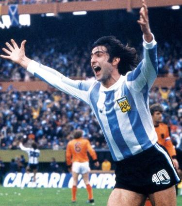

Argentina campeón del mundo por primera vez: 3 a 1 a Holanda bajo una lluvia de papelitos
Con dos goles de Kempes y uno de Bertoni en el alargue, la selección de Menotti conquistó en el Monumental la copa que el país esperaba desde 1930. Holanda estrelló una pelota en el palo cuando el título se le iba a la tumba.

El estadio Monumental fue esta tarde una tormenta blanca: millones de papelitos cayeron sobre el campo cuando la selección argentina salió a jugar la final, y no dejaron de caer hasta que el capitán Passarella levantó la Copa del Mundo. En la cancha, el partido fue un drama completo. Kempes, el Matador, abrió la cuenta en el primer tiempo arrastrando la pelota y los defensores como viene haciéndolo todo el torneo; Holanda empató a poco del final por Nanninga, y en la última jugada de los noventa minutos el disparo de Rensenbrink dio en el palo del arco de Fillol. Dos centímetros decidieron que este país siguiera respirando.
En el alargue, la naranja mecánica se quedó sin cuerda y Argentina la pasó por encima: otra vez Kempes, embistiendo entre tres, y luego Bertoni sellaron el 3 a 1. Los holandeses, subcampeones por segunda vez consecutiva, se retiraron amargos y sin saludar la premiación; los nuestros dieron la vuelta olímpica en un estadio que no se vaciaba, y las calles de todas las ciudades argentinas son a esta hora un solo carnaval de bocinas y banderas, el más grande que registre la memoria futbolera de este pueblo.
El camino del campeón tuvo de todo menos serenidad. El equipo de Menotti, que lleva cuatro años predicando un fútbol de toque contra el pragmatismo de moda, sufrió en la primera rueda —derrota con Italia incluida—, se mudó a Rosario y allí encontró a su Matador: Kempes, el único del plantel que juega en el extranjero, no había convertido en toda la primera fase y terminó goleador del torneo. La clasificación a esta final incluyó un 6 a 0 a Perú que dio la vuelta al mundo con más de una ceja levantada, empezando por las de Brasil, que quedó afuera por diferencia de gol sin perder un solo partido y habla de puntos que no se juegan en la cancha. La final de hoy, al menos, no dejó lugar a contabilidades: se ganó a lo campeón.
La previa fue una guerra de nervios que los holandeses denunciarán largamente: el equipo argentino demoró su salida al campo cinco minutos eternos, dejando a los naranjas plantados bajo la silbatina, y objetó luego el yeso que el mediocampista Van de Kerkhof lleva en la muñeca desde el debut. Cuando por fin se jugó, el estadio fue un instrumento más: el «vamos, vamos, Argentina» bajaba de las tribunas como una marea física que los propios jugadores confesaron sentir en las piernas. En las casas, la transmisión rompió todos los registros conocidos, y no hizo falta esperar el pitazo final: al tercer gol, las puertas de todo el país ya estaban abiertas y la calle, tomada.
Que la crónica deportiva no borre el paisaje: este Mundial se jugó en un país gobernado por las armas, que montó la fiesta con esmero y la administró a su conveniencia; a pocas cuadras del Monumental funcionan dependencias de las que se cuentan cosas que la prensa de hoy no puede o no quiere averiguar. La pelota, ajena a todo, entró donde tenía que entrar, y el pueblo celebra a sus futbolistas con una alegría que es genuina y es suya. Los años dirán cómo se abrazan, en la memoria de esta tarde, la gloria y la sombra.